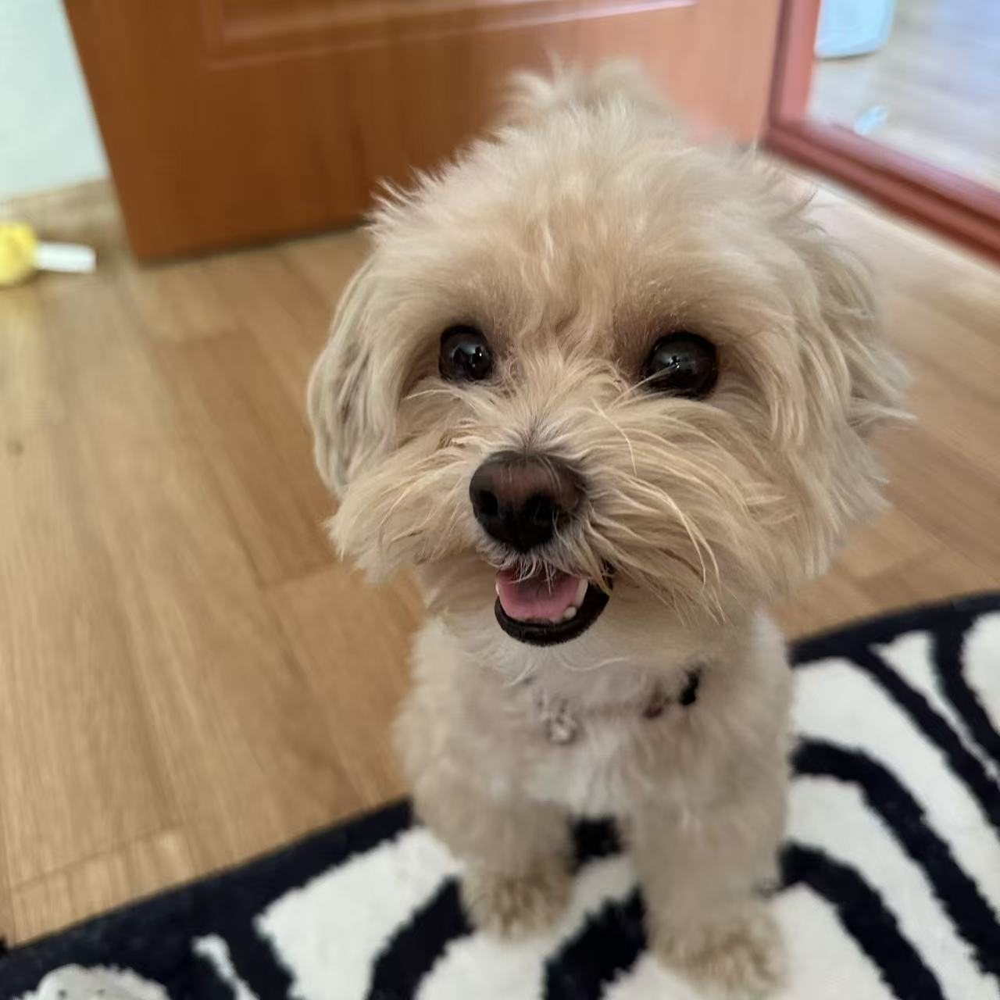
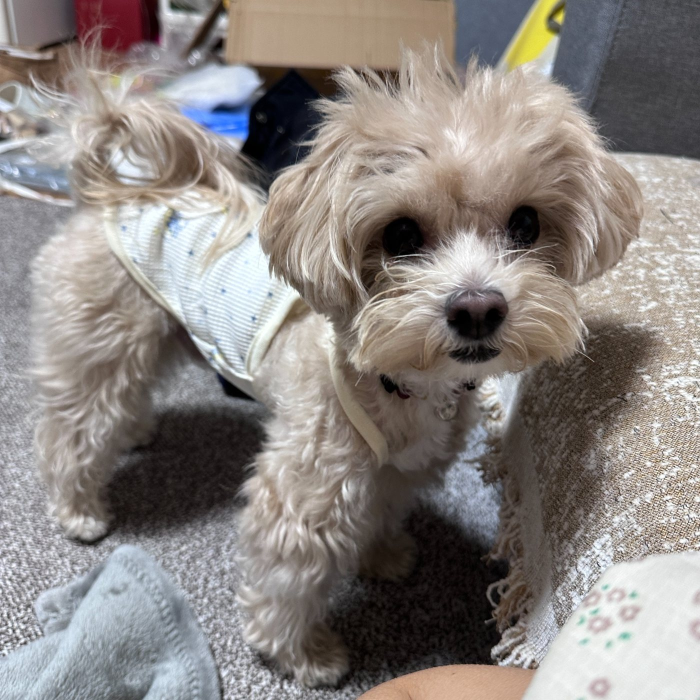
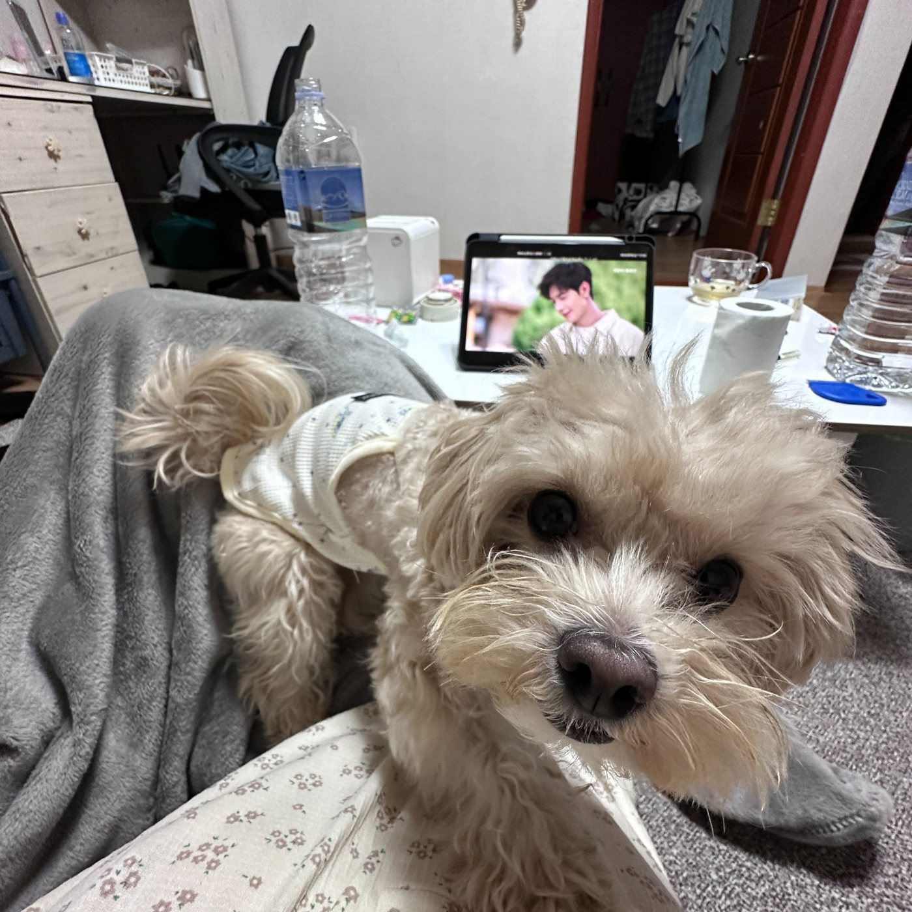
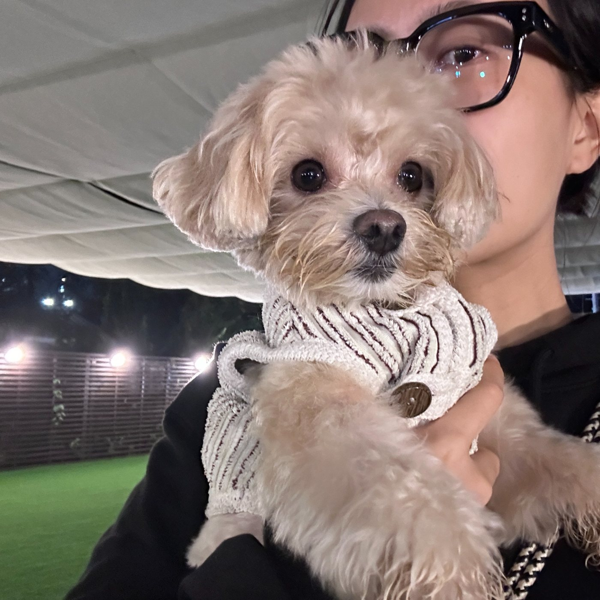
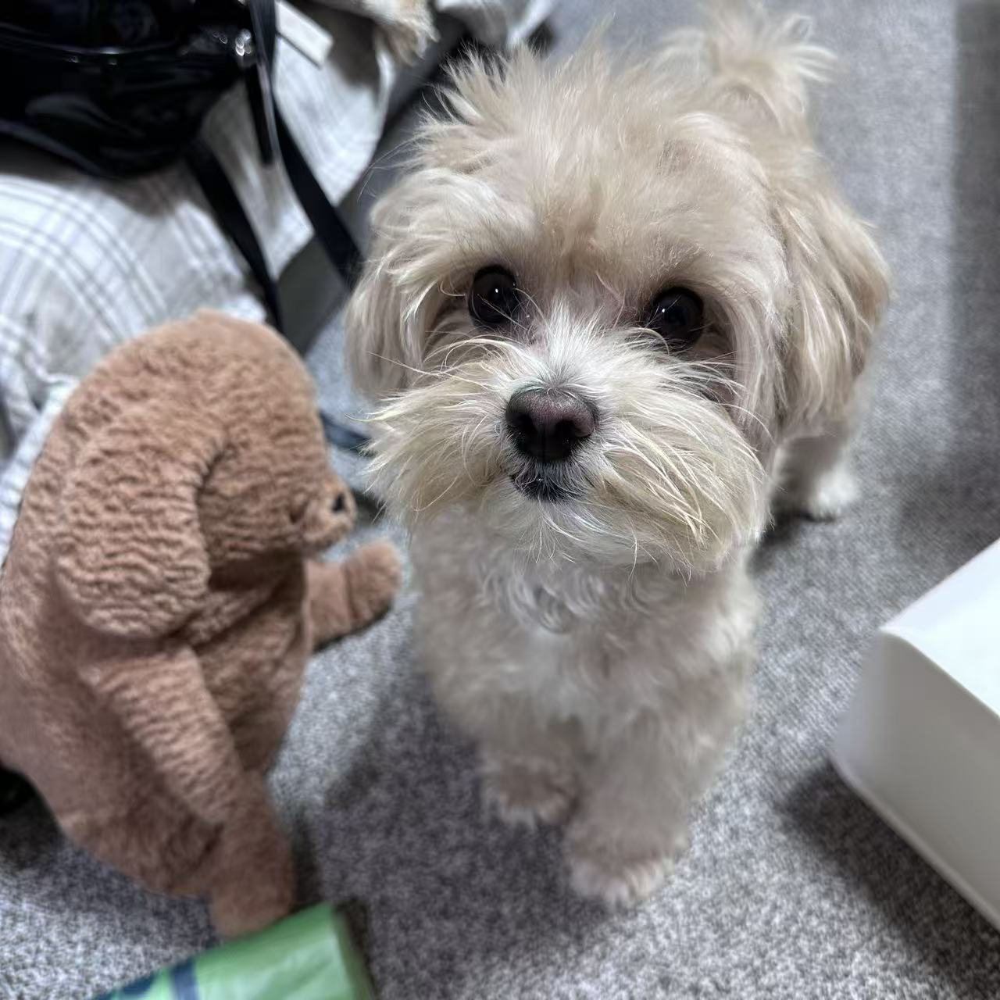

My Yellow Ball
Throw my yellow ball and I'm the happiest pup in the world!
A tiny fluffy dog with a big heart, a favorite yellow ball, and lots of love for my human.

Small paws, fluffy hair, and an extra-big personality.

My name is MaTuan, and I was born in 2022. I'm a sweet little dog who loves to play, explore, and spend every possible moment with my favorite person.
Some people say I'm a little clingy. I just think that wherever my human goes, that's exactly where I belong! 🥰
The three little things that make my tail wag.
Throw my yellow ball and I'm the happiest pup in the world!
My favorite place is right next to my human. Always.
I love following my human around and sharing every little moment.
A few of my sweetest everyday moments.



My favorite thing in the world is my human.
And my yellow ball, of course! 💛